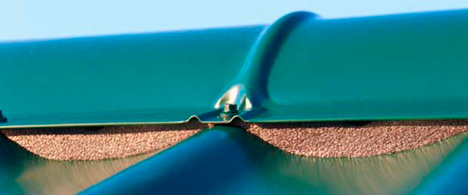

Универсальный уплотнитель – дополнительный элемент для кровли или необходимость.
Как уплотнитель защищает кровельный пирог от влаги и что будет, если его не ставить.
Где на металлочерепице уплотнителю самое место
Зачем нужен уплотнитель для металлочерепицы, если листы и так плотно прилегают друг к другу? Листы этого кровельного материала действительно лежат на крыше так, что швов не видно. Но вот между дополнительными элементами кровли и металлочерепицей щели есть. Ведь и у российской металлочерепицы, и у финской металлочерепицы – профиль в виде волны. Это вообще главный отличительный признак этого материала для крыш. А доборные элементы – ендова (разжелобок), конек для металлочерепицы и другие – имеют прямой профиль. Между плоскостью и волной образуются довольно большие отверстия – шириной до 150мм и высотой по 20-30мм.
Вот в эти места и должен устанавливаться уплотнитель. Он крепится:
- на конек (с двух сторон профиля),
- к ендове (с двух сторон),
- к ветровой планке (с одной стороны),
- к пристенной планке (с одной стороны).
Чтобы подкровельное пространство не превратилось в сливной бак
Закономерный вопрос – много ли воды может попасть под крышу? Ведь металлочерепица заходит под конек на 5 и более сантиметров. А скаты кровли всегда наклонные – чтобы вода стекала вниз.
Если ветра нет, то не попадет. А если дует сильный ветер, то он будет гнать воду и вверх по наветренному скату.
Так часть дождевой воды попадет под кровлю. То же самое и со снегом зимой. Снежинки будет задувать в любые щели, даже самые маленькие. Кто сомневается, вспомните старые деревянные окна. Если их не заклеить на зиму, то на подоконнике во время метели появится снежок. Даже при плотно закрытых форточках.
Так что без уплотнителя все подкровельное пространство после хорошей метели будет забито снегом. А от тепла этот снег начнет таять. Тут уж никакая гидроизоляция кровли не справится. Станут мокнуть утеплитель и стропильные конструкции, коррозия незаметно начнет превращать красивую металлочерепицу в решето.
Уплотнитель – жесткий или мягкий?
Уплотнители делятся на:
- «жесткие» - специализированные,
- «мягкие» - универсальные.
Жесткие уплотнители точно копируют форму профиля металлочерепицы, они плотно, без зазоров, прилегают к листам. В зависимости от места установки и типа профиля металлочерепицы уплотнитель бывает прямой или обратный («волна» сверху или «волна снизу»).
Жесткий уплотнитель производится из вспененного полиэтилена высокого давления (ПВД) с закрытыми ячейками. Герметизация получается полной, что недопустимо – должна быть обеспечена вентиляция кровли. Поэтому в профилях жесткого уплотнителя есть вентиляционные отверстия для свободной циркуляции воздуха. Но в эти отверстия может попадать влага при сильном ветре.
Мягкий или универсальный уплотнитель – как понятно из названия, его можно ставить в любое место на крыше. Представляет собой профили прямоугольного сечения 40х50мм длиной 1м. Благодаря своей мягкости полоса примет нужную форму и заполнит все пространство между листами кровельного материала.
Универсальный уплотнитель самоклеющийся. При укладке металлочерепицы нужно снять защитную полосу с клеевого слоя и ровно прижать уплотнитель, например, к коньку. Клеить можно и на неподготовленную поверхность при температуре до -5 градусов – клей будет держать. А сам конек (или другой профиль) с помощью кровельных саморезов крепится к металлочерепице.
Мягкий универсальный уплотнитель изготавливается из вспененного пенополиуретана. Пористость у этого материала открытая, то есть он воздухопроницаем. Универсальный уплотнитель работает наподобие мембраны – воздух и водяные пары из подкровельного пространства проходят через него, а дождевая вода и снег – нет.
То есть такой уплотнитель защищает подкровельное пространство (утепление, стропила, рейки обрешетки и внутреннюю сторону металлочерепицы) от попадания воды и снега. В то же время он не мешает нормальной вентиляции кровли. Подобными свойствами, кстати, обладает диффузионная пленка для гидроизоляции кровли.
Металлочерепица в Алматы
Источник: postroikado.ru